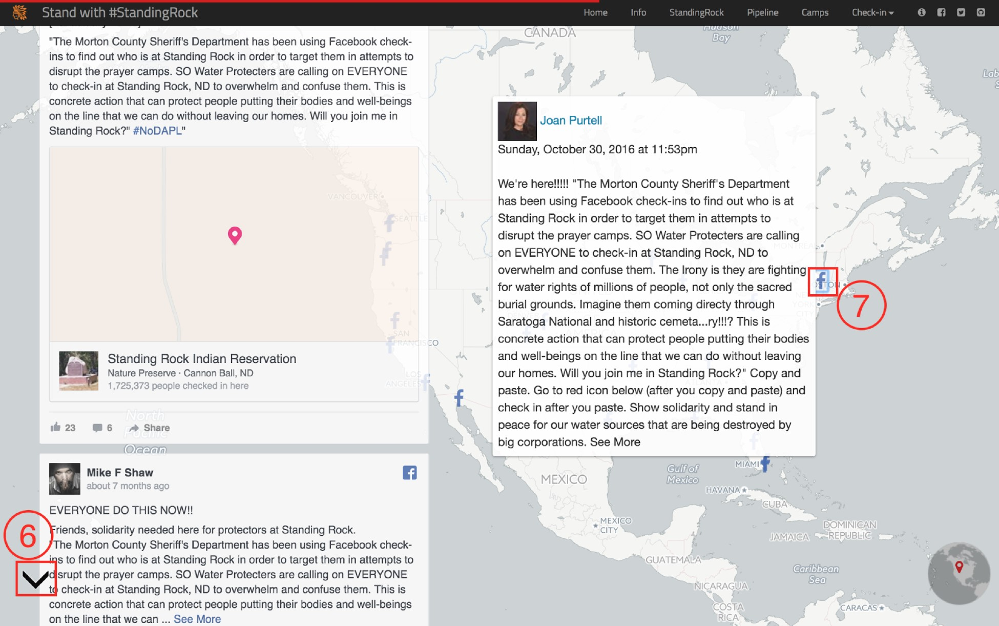
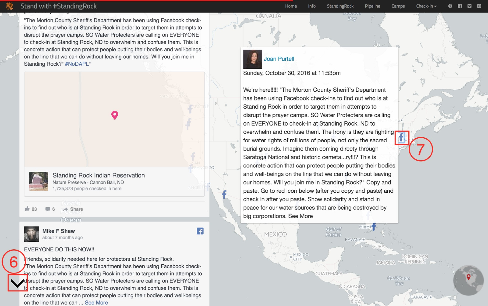

Project Summary
Following months of conflict, triggered by a proposed pipeline, in January 2017, environmental protestors were forced to leave their camping area at Standing Rock. Today, it has become nearly impossible for people to access the former camping area. Even though protestors no longer stay there, a growing number of social media users still stand with #StandingRock by spoofing their check-ins on Facebook. With storymap techniques, this dynamic map geo-narrates the whole story of the environmental protest at Standing Rock and #standing rock.
Background
Dakota Access Pipeline(DAPL) is an underground pipeline project, crossing states of North Dakota, South Dakota, Iowa, and Illinois. It is designed to transport as many as 570,000 barrels of crude oil daily. The purpose of this project is relevant to the issue of energy security in the United States. The pipeline passes through the Lake Oahe near the Standing Rock Indian Reservation.
Members of the Standing Rock Sioux Tribe and some environmental supporters protested the project daily around the construction site. Even though the pipeline's developers claim that the pipeline is safe for the environment, the opposers say the environmental risks, especially water issue, are too great for it to move forward. They also compare the DAPL with the scrapped Keystone XL pipeline. Meanwhile, opposers concern that the pipeline will disturb historical and religious sites((2016).
Tensions between the pipeline developers and opponents developed since April 2016. Standing Rock Sioux elder LaDonna Brave Bull Allard established Sacred Stone camp as a center for the cultural preservation and spiritual resistance to the pipeline. Over the summer the camp grew to thousands of people. Later, two more camps were established in the area. People gathered at the campsites to show their support.
Early on October 31, 2016, a Facebook post said that the Morton County sheriff's department was using Facebook check-ins to target people at the protest camps (CNN 2017). People outside of the protests camp checked-in to Facebook to ‘overwhelm and confuse' law enforcement officials, although police denied tracking activists on social media (CNN 2017; States News Service 2017; Uwire 2016). The Check-in feature allows users to add their current or nearby location to posts on Facebook. However, people can falsify their location check-ins, which is known as location spoofing. Later, more and more people checked-in to the Facebook to keep an eye on the event.
The purpose of this dynamic story map project is to show spoofing check-ins on Facebook related to the Dakota Access Pipeline Protest(#NoDAPL) in Standing Rock recreation area, and how people use social media to speak up for themselves or show their supports.

Methodology
This dynamic story map project includes multiple maps, graphics, photos, video, and text information. After gathering all data, the process of data is broken down into the following steps 1). (Facebook data)2). use QGIS to process the geospatial data, 3).design and program files of HTML, CSS, and JavaScript.
1. Crawling
We use Python to write a program helping us crawling down the data automatically. The functions of this program include 1). Open a browser 2).Go to Facebook, 3). Search "Standing Rock call check-in,” 4).Scroll down automatically, and set 5 seconds to wait for a response and cache per scroll, 5).Until the end of scrolling, start crawling down the post and other information like username, and store these data in a database, and 6).pick up the categories which are useful, then transform the data into a .js file.
2. QGIS
Most data are in national scale. To reduce the size file, we use the clip tool to select aquifer, river, and reservation area. Also, we will QGIS to transfer all shapefile data into a geo JSON file so that the data can be inserted into the web page.
3. Design and Program
• Storymap: Storymap is the core frame of this website. This storymap are organically made up by several scenes: Home, Info, StandingRock, Pipeline, Camps, Check-in, Spoofed Check-ins, Why Spoofing?, and Spatial and Semantic Explore. For each scene, there are a panel and a map. We put context in the main panel part and use a map consists of basemap, thematic layers and interactive features to help, illustrating the setting.
• Leaflet: Leaflet is the leading open-source JavaScript library for mobile-friendly interactive maps. We use this to support the map part.
• Bootstrap: framework of the Info scene. helps to line up the icons and text.
• Markercluster Photo (for scenes StandingRock, Pipeline and Camps): use this method to show geo-tagged photos. photos are shown on the map as clusters of thumbnails, and hovering on each thumbnail would open the image in the left panel.
• d3 trendline (for scene Info): use it to draw the trend line of Google Trend data, csv file.
• Hexbin: use the hexbin to visualize Facebook posts instead of traditional scatter points, helping people understand the post count in one area better.
• color design:1). use palettr to search the thematic color of tribe, oil, water, etc. 2).use colorbrewer to adapt the wordcloud color.
• wordcloud: to show what people were talking about. It use JS library to analyze the post content we crawling down from Facebook.
• globe minimap: show in the right down corner about where the map scene located on earth.
• Illustrator: Adobe software helping us to design the favicon.
• Font Awesome icons: for the Info scene, we use font awesome icons: location, user, male, and Facebook.
• Google Fonts: Use Google Fonts to define the text fonts(both paragraph and map label).
Tutorial
1) This is a navigation bar. It includes all subjects of this web map. The check-in bottom contains three sub-subjects. You can click on the subject, and jump to a particular page.
2) These four icons connect to about page and three external links. The first one from the left is the about page button. The second one (with Facebook symbol) and the third one(with Twitter logo) allow you to share this website on your face, and the last one is a button to direct you Github page, where you can find the code and data of this page.
3) A drop down arrow to help you go to the next page.
4) A process bar to help you know where you are.
5) It is a click-on feature. Move the mouse to the picture; it will show you a larger size on the left panel.
6) " next page" button go to the left corner but still serves the same function as step 3.
7) Check what people said about the standing rock event, move the mouse to the icon "F" at the page of check-in.

 

Result
The usage of geolocation-based social media not only concentrate on personal interests. Through the case studying of standing rock, it shows that people could use this function to show their supports for specific events. From the Facebook Check-in page, 337,589 people check-ins to the site of standing rock. According to Google Trends, the search volume of term “standing rock” peaked at the end of 2016. Though the official map made by the company says the pipeline does not cross any land belonging to the Standing Rock Sioux, you can tell from our map that there are aquifer and lakes near the pipeline. The oil leak may infect the environment like the water and soil after some time, that is why it is important to buffer area when constructing such kind of infrastructure (States News Service 2017).
Nearly two thousand users’ data downloaded from the Crawling(Method1). The hex bin map shows the distribution of users from our database. Darker color indicates a greater number of users who answered the call from Facebook location check-in. The place of standing rock protest camps has the highest number on the Facebook page. The main cities in the United States, such as Los Angeles, New York City, San Francisco, and Seattle have a relatively large number of users who participate in this online “Check-In” event. This result was expected because people at the urban area show more interest in environmental issues. Also, urban population tends to have a larger quantity than the rural area. The Urban population may spend more time on social media so that they can access to the information within a short notice ((Murthy, Gross, and Pensavalle 2015). Meanwhile, more people at the coastal area answered to the check-in. We expected individuals in the vicinity or affected by the pipeline may show more interests or supports for the event of standing rock. However, no significant amount of posts was found in the States of North Dakota, South Dakota, Iowa, and Illinois. This project focuses on the users from the United States. However, through the Crawling data, we found that people from other countries, such as Australia, Canada, China, England, and France, also check-in to Facebook.
Reflection on this project
The project provides an excellent opportunity to learn different types of web-mapping skills and to work with people. Although we have limited experience in web coding when the project started, we used GitHub materials to study some basic idea and codes of web-mapping. Also, we consulted with the advisors and other people when we had the difficulty. The standing stock event is a good example to explain the idea of location spoofing, but, to present the whole event, and why people use Facebook Check-ins, political information may include. To reduce the possibility of showing personal opinion on this project, we spent some time to word each section. The quantity of Facebook “check-in” data is enormous, so we randomly selected 1858 sources for this project. GitHub, USGS, and US Census TIGER product were the source for our geospatial data. Overall, through this project, we identify the issue and share the events with audiences. Also, we present the concept of location spoofing through the Facebook check in for standing rock protest. In the future, the project will continue and understand how people use other social media to speak for their concerns of policies and projects, and share their supports.
Our Team